Dynamic Response Characteristics of More Complicated Processes(2)
5장에서는 비교적 간단한 과정의 동역학, 즉 1차 또는 2차 전달 함수 또는 적분기로 모델링할 수 있는 과정의 동역학을 논의했다. 이제 분모에 추가적인 시간 상수를 포함하거나 s를 포함하는 더 복잡한 전달 함수 모델을 고려할 것이다. 전달 함수 모델의 분자와 분모의 형태가 공정의 동적 거동에 어떤 영향을 주는 지 알아볼 것이다.
또한 시간 지연과 복잡한 전달 함수 모델을 더 단순하고 저차 모델로 근사하는 방법을 제시한다. 추가 주제로는 상호작용 과정, 상태 공간 모델, 그리고 다중 입력 및 출력을 갖는 과정이 포함된다.
POLES AND ZEROS AND THEIR EFFECT ON PROCESS RESPONSE
5장에서 논의된 단순 프로세스 모델의 중요한 특징은 그들의 응답 특성이 전달 함수의 분모에 따라 결정된다는 것이다. 예를 들어, 다음 전달 함수를 생각해보자.
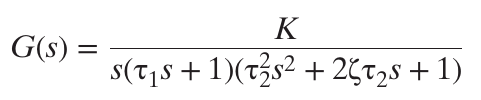
0 ≤ζ<1사이이다.
partial fraction expansion과 inverse transformation을 하면, 일단 응답에 관계없이 전달함수 때문에 다음 근은 반드시 나옴을 알 수 있다.
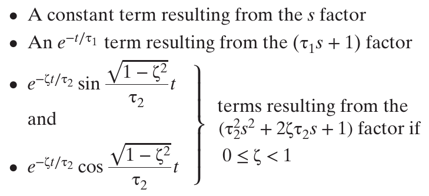
그리고 응답에 의해서 몇가지 근도 나타나긴 하는데, 일단 response modes or natural modes라고 불리는 모델의 동적 특징은 G에서 결정된다.
이때 역변환한 것 말고 G(s) 자체에서 근을 살펴보자. 분모 근의 경우 다음과 같다.
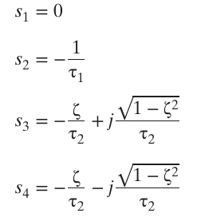
이 근들을 poles라고 부른다.
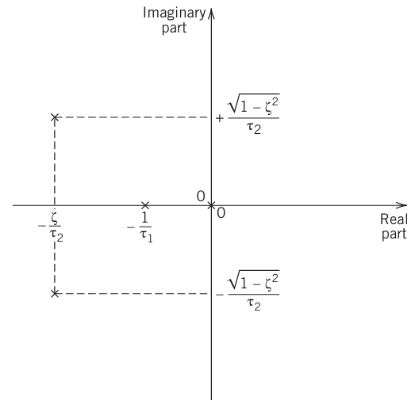
폴을 좌표로 실수축과 허수축에 나타내면 다음과 같다.이때 허수축으로부터 실수 폴이 멀어질수록 응답은 빨라진다. 근데 이건 공정제어에서는 잘 안쓰이고 전기제어 시스템에 자주 사용된다.
이번엔 numerator dynamics를 살펴보자.
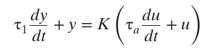 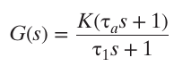
이런식으로 분자에도 s항이 추가되는 경우가 있다.
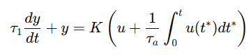 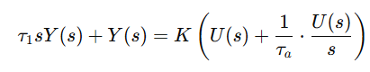 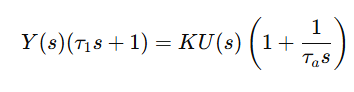 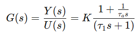 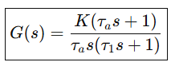
이때는 분자에도 s항이 들어오면서 분자의 근이 생기는데, 이를 제로라고 한다.
제로에 대해 논의하기 전에, 전달 함수를 작성할 수 있는 몇 가지 동등한 방법을 살펴보는 것이 좋다.
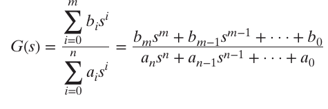
원래는 이런식으로 전달함수를 정의했다. 그러나 폴-제로를 다루는 다음과 같은 표현법도 있다.
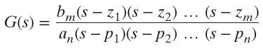 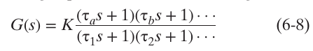
여기서 제로는 응답모드에는 영향을 주지 않으나 전개방식에 영향을 준다.
Second-Orde rProcesses with Numerator Dynamics
1차 시스템에 제로가 존재하면? y(t) at t=0 에서 계단응답이 적용될 때 jump discontinuity가 발생한다. 따라서 물리적으로 가능하려면 폴이랑 제로가 있을 때 분모 차수가 분자보다 더 커야한다.
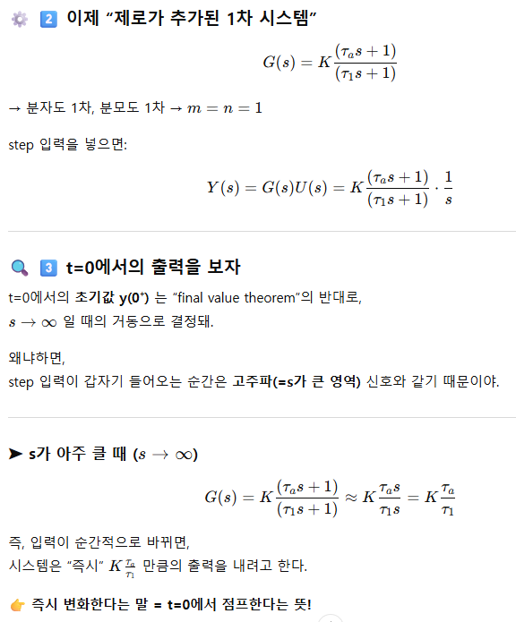 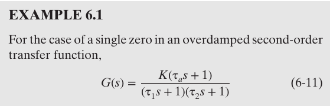
위 전달함수가 주어져있을 때, 스텝인풋 매그니튜드 M을 찾고 τ1=4,τ2=1 and several values of τa의 그래프를 그려보자.
테이블 찾으면 다음이 나온다.
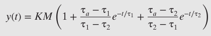
y(t→∞)=KM이므로 single zero의 역할은 최종값에는 영향을 안준다. 그러면 전개에 영향을 줄 것으로 판단된다. 해(식 6-12)에서 응답 모드(지수 항)의 계수에 영향을 주는 걸 볼 수 있다.
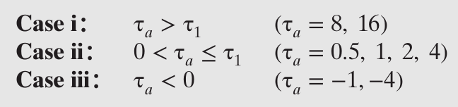
이런 3가지 경우에 대해서, 첫번째는 오버슈팅이 발생하고 (2)는 1차계와 비슷하게 행동하고 (3)은 역반응이 발생한다. 그냥 그래프를 그려보니 그렇더라.
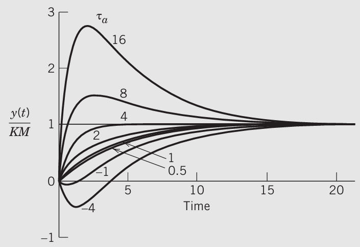
ta가 충분히 높으면 오버슈팅을 한다. 이때 중요한 것은 오버슈팅이나 역응답은 영점이 없는 과도감쇠 2차 전달함수에서는 일어나지 않는다는 것이다.
역응답에 대해서 더 자세히 알아보자.
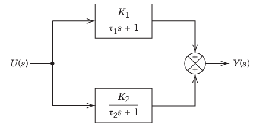
병렬 배열에서 두 개의 1차 전달 함수에 대해 역응답이 발생할 수 있다.
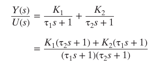 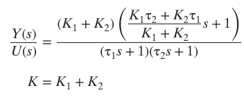 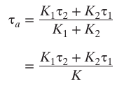
이때 τa < 0에서
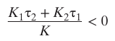 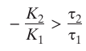
서로 부호가 다른 두 1차가 병렬로 합쳐지면, 처음에는 빠른 쪽이 이겨 출력이 반대방향으로 움직였다가, 나중에 느리지만 최종 이득이 더 큰 쪽이 이겨 최종값 방향으로 돌아온다.


------------------
PROCESSES WITH TIME DELAYS
물질이나 에너지가 프로세스나 플랜트에서 물리적으로 이동할 때 시간 지연이 발생한다. 예를 들어 유체가 파이프를 통해 이동할 때, 걸리는 지연 시간은 다음과 같다.
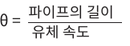
이거는 dead time이라고도 불린다. 시간지연은 다음처럼 표현되기도 한다.
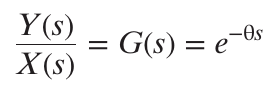
예를 들어 지연이 있는 1차계다?
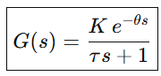
이렇게 표현이 된다. 이건 first-order plus time-delay 라고도 불린다.
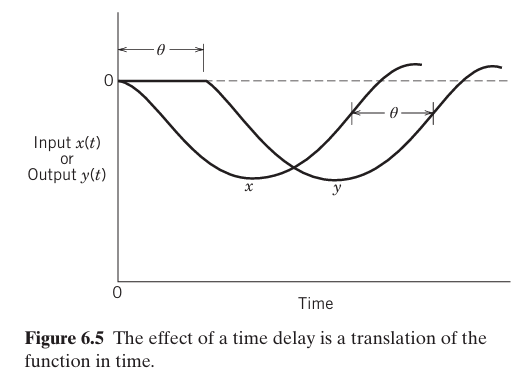
입력이 바뀐 그 즉시 공정 내부에서는 변화가 시작되지만, 출력에 나타나는 건 θ\theta만큼 뒤늦게 보이게 된다. 이로인해 그래프에 지연이 발생한다.
Polynomial Approximations to e−𝛉s
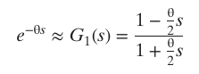
파데근사라고 불리는 근사로 시간지연을 나타내기도 한다.
INTERACTING AND NONINTERACTING PROCESSES
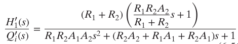 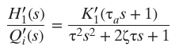
상호작용이 있으면 시스템이 복잡해진다.